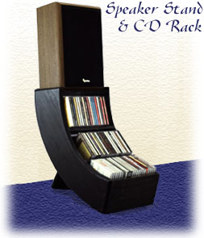

|  | I designed and built these speaker stands for a Materials Workshop class that I took before any of my design studios. Ironically, of all my projects, it's probably my favorite. I still use them — together they hold about 124 CDs and support up to about 11"-wide speakers. Their arced structure improves the viewing angle for the lower racks while also creating an elegant appearance. I've had quite a few people ask me where they can get them! |